NeuroDOT 2.2.0 Tutorial - Preprocessing Pipeline
Welcome to NeuroDOT 2.2.0 Base Edition!
Contents
- Diffuse Optical Tomography
- NeuroDOT 2 Overview Flowcharts
- Preprocessing Pipeline Flowchart
- Mapping Hearing Words
- The Preprocessing Pipeline
- Sample Data
- S-D Measurements
- Logmean Light Levels
- Detect Noisy Channels
- Linear Detrending
- High Pass Filter
- Low Pass Filter 1
- Superficial Signal Regression
- Low Pass Filter 2
- 1 Hz Resampling
- Block Averaging
- Preprocessing Pipeline Complete!
- NeuroDOT 2 Overview Flowchart
- Reconstruction Pipeline Flowchart
- Reconstructing Image Volumes
- HD-DOT Sensitivity Profile
- Sensitivity A Matrix
- Invert A Matrix
- Smooth Inverted A Matrix
- Reconstruct Image Volume
- Spectroscopy
- Reconstruction Pipeline Complete!
- Saving Your Results
- Conclusion
- Citations
- Appendix: Preprocessing
Diffuse Optical Tomography
In diffuse optical tomography (DOT), cap arrays of optical sources and detectors are used to perform functional neuroimaging experiments.
These experiments are broken into several components pipelines: preprocessing of the raw source-detector measurements, modeling of the light emission, diffusion, and detection through the head, reconstruction and spectroscopy of the preprocessed data and light model into a functional neuroimaging volume, and analysis of these results.
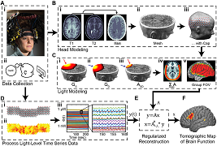
These pipelines allow a variety of experimental paradigms to be investigated.
NeuroDOT 2 Overview Flowcharts
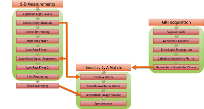
Preprocessing Pipeline Flowchart
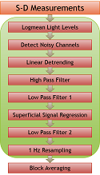
Mapping Hearing Words
In the “hearing words” (HW) paradigm, which we will use in this tutorial, a participant quietly listens to auditory stimuli presented through speakers.
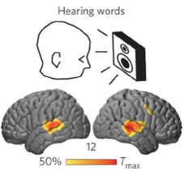
The stimuli are divided into six 30-second blocks (white rectangles on bottom-right), with one spoken word per s for 15 s, followed by 15 s of silence.
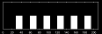
These blocks are averaged together and reconstructed into a 5D time series movie of brain function: 3 dimensions of space, 1 dimension for time, and 1 dimension for Hemoglobin contrasts: oxy, deoxy, and total.
The Preprocessing Pipeline
The first part of this tutorial focuses on the first stage of our research scenario: preprocessing.
Preprocessing involves using a number of digital signal processing and analysis techniques to remove interfering or systemic signals, and isolate the brain activity responses to stimuli (such as the Hearing Words experiment).
We will assess data quality at every step along the way to ensure that we are acquiring high-quality maps of brain activity.
You will be given syntax prompts along the way. Copy and type these into the MATLAB command line, or highlight them and either press F9 or right-click and select "Evaluate Selection" on the pop-up menu.
If you are unfamiliar with NeuroDOT and its data structures at any point, please refer to the Overview Tutorial and User Manual. Also, the List of Files and Functions provides easy reference to all other help documentation.
Sample Data
First, we need to load up our sample data. There are two sets, one of high quality that has been presented in published papers [1], and another "noisy" set that was chosen to contrast against the first.
hw1 = load('NeuroDOT_Base_HW_Sample_1.mat'); noisy = load('NeuroDOT_Base_HW_Sample_Noisy.mat');
In the workspace, these samples are stored as structures with fields data, info, and flags.
Now, we're ready to start working on the Preprocessing Pipeline!
S-D Measurements
We'll work first from the raw source-detector pair measurements in data. We can visualize the time traces of each channel with plot.
Create a new figure and plot the data:
figure plot(hw1.data')
Calculate x-axis limits from the array’s size, and label the axes:
[Nm, Nt] = size(hw1.data); xlim([0, Nt+1]) xlabel('samples') ylabel('light level')
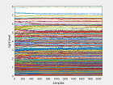
If we use MATLAB’s magnification tool to zoom in on the figure, we can see the signal in more detail. Each line is a single channel's time trace. The fast, periodic spikes we see are the heart pulse signal.
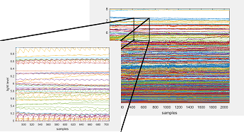
The mean value of each channel is relatively consistent, but the channels are spread across several orders of magnitude. We see this in traces bunched at the bottom.
We can alleviate this bunching with a semilogy plot. We'll also convert the 'samples' units to 'seconds' using the system framerate.
Create a new figure and plot the data:
dt = 1 / hw1.info.system.framerate; figure semilogy([0:dt:(Nt-1)*dt]', hw1.data') ylabel('light level') xlim([0, (Nt-1)*dt]) xlabel('seconds')
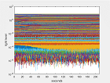
Zooming in again shows the time traces spread more evenly among the orders of magnitude.
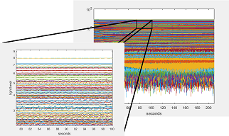
There is a characteristic log-linear relationship between S-D distance and mean light level for light diffusion in biological tissue. Let's explore that by plotting it!
Create a new figure and plot the TIME mean of each channel versus S-D distance:
figure semilogy(hw1.info.pairs.r2d, mean(hw1.data, 2), '*') xlabel('S-D Separation [mm]') ylabel('Light Levels')
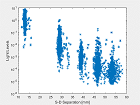
Why do the channels all line up vertically in the same 5 S-D distance, or pair radius, bands? They represent groups of nearest neighbor pairs on a 3D cap. In this data, the first through fifth nearest neighbors were measured.
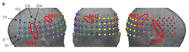
We can visualize the differences in mean light levels between radius ranges with hw1.info.pairs.r2d.
Create a new figure and plot time traces for the [10, 16] and [27, 33] radius ranges:
figure keep = (hw1.info.pairs.r2d >= 10) & (hw1.info.pairs.r2d <= 16); semilogy(hw1.data(keep, :)') xlim([0, Nt+1 * dt]) xlabel('seconds') ylabel('light level') title('r \in [10, 16]') figure keep = (hw1.info.pairs.r2d >= 27) & (hw1.info.pairs.r2d <= 33); semilogy(hw1.data(keep, :)') xlim([0, Nt+1 * dt]) xlabel('seconds') ylabel('light level') title('r \in [27, 33]')
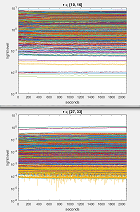
This logical indexing from the info.pairs table forms the core of how NeuroDOT 2 groups and categorizes measurement data by pair radius range (r2d or r3d), nearest neighbors (NN), and wavelengths (WL).
We'll use the info.pairs.r2d range of [10, 16] and WL2 to start with. This is done with the params structure, which passes parameters on to NeuroDOT's visualization functions:
params.rlimits = [10, 16]; params.Nwls = 2;
To learn more about the params structure, please consult the User Manual or the "params Usage" appendix at the end of the Overview tutorial.
There are two NeuroDOT 2 functions for the visualizations we've just learned:
PlotTimeTraceAllMeas(hw1.data, hw1.info, params) PlotFalloffLL(hw1.data, hw1.info)
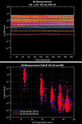
Let's also run the Light Level Falloff visualization for the Noisy data set:
PlotFalloffLL(noisy.data, noisy.info)
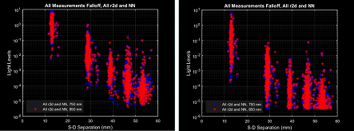
And here is the light level falloff. The higher radius/NN pairs lose their log-linearity in the Noisy data, potentially indicating a bad cap fit.
Let's visualize the cap's topography now. We'll be using a NeuroDOT function, PlotCapData, that plots RGB inputs onto the the cap grid provided in info.
Create arrays of RGB values for each source and detector:
Ns = length(unique(hw1.info.pairs.Src)); Nd = length(unique(hw1.info.pairs.Det)); SrcRGB = repmat([1, 0.75, 0.75], Ns, 1); DetRGB = repmat([0.55, 0.55, 1], Nd, 1);
Set up params and call PlotCapData:
params.mode = 'textpatch';
PlotCapData(SrcRGB, DetRGB, hw1.info, params)
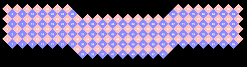
The NeuroDOT function for this is PlotCap:
PlotCap(hw1.info)
PlotCapData is a low-level function that several different high-level functions like PlotCap call to make variations on the same basic plot.
The low-level visualizations in NeuroDOT 2 all have the word "|Data|" at the end of their name.
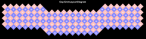
Next, we'll use another high-level visualization to map the channel temporal means we calculated for the Light Level Falloff plot (PlotFalloffLL) onto the cap grid:
params.mode = []; % Removing the mode.
PlotCapMeanLL(hw1.data, hw1.info, params)

Let's also plot the Cap Mean Light Levels for r2d = [27, 33], WL2. We'll scale the two plots to the same value to see how they correspond to the Light Level Falloff plots:
params2 = params; params2.rlimits = [27, 33]; PlotCapMeanLL(hw1.data, hw1.info, params2)
Due to the units scaling, large portions of the [27, 33] channels fall under the 10 nW noise floor.
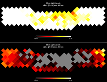
Now, let's compare this to the Noisy data for [10, 16]:
PlotCapMeanLL(noisy.data, noisy.info, params)
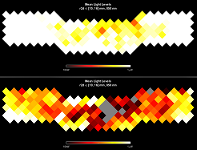
The Noisy data is getting poorer light coupling in the middle of the cap and along the top-right side.
These functions also support 3D rendering:
params.dimension = '3D';
PlotCap(hw1.info, params)
PlotCapMeanLL(hw1.data, hw1.info, params)
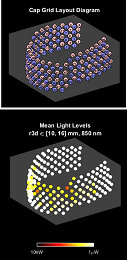
NeuroDOT's 3D visualizations enable you to inspect the plot from any angle. Try it now by clicking anywhere on the cap and dragging it around!
Let's also not forget to clear some variables:
clear DetRGB dt params2 SrcRGB keep Nm Nd Ns Nt
And clear unnecessary params fields:
params.dimension = [];
Logmean Light Levels
For imaging brain function throughout a volume, the Rytov approximation is the most accurate model. This approximation uses log-normalized light level data. Thus, our first step is encapsulated in the equation below, where \Phi is the measured light level and \Phi is the temporal mean, for each channel.
See the DOT Appendix for more information on this model.
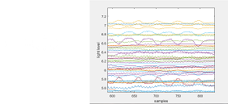
NeuroDOT's function for this is simply named logmean. Let's run it on our data and visualize the All Measurements time traces.
We'll add a params command to switch the traces to 'linear' scaling:
hw1.lmdata = logmean(hw1.data); params.yscale = 'linear'; params.ylimits = 'auto'; PlotTimeTraceAllMeas(hw1.lmdata, hw1.info, params)
Comparing the logmean'ed data (bottom) to the raw measurements (top), we can see that the logmean reveals more of the signal variance resulting from hemodynamics.
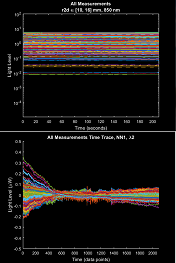
Let's look at the logmean of the Noisy data:
noisy.lmdata = logmean(noisy.data); PlotTimeTraceAllMeas(noisy.lmdata, noisy.info, params)
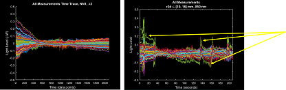
The irregular, sawtooth epochs of data (yellow arrows) along these time traces are indicative of possible motion artifacts. The Noisy data clearly has more such epochs than HW1.
These motion artifacts will also show if we plot the data as a grayscale image, which we can do with the function PlotGray:
PlotGray(hw1.lmdata, hw1.info, params) PlotGray(noisy.lmdata, noisy.info, params)
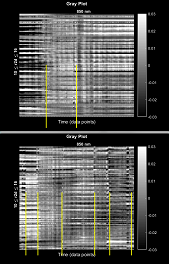
Here we see that HW1 (top right) has fewer abrupt signal discontinuities (yellow bars) than Noisy (bottom right).
Let's clear unnecessary params fields:
params.ylimits = []; params.yscale = [];
Detect Noisy Channels
The next step is detecting noisy channels. The variation in each channel is ideally driven by hemodynamic changes; however, in lower signal-to-noise data, motion or poor coupling (etc) could add unwanted variance, which we would consider to be noise.
NeuroDOT 2 recommends a threshold of 7.5% in units of standard deviation of the channel time trace, to label a channel as noisy, based on empirical comparisons of data quality [1].
The NeuroDOT function for detecting these channels and applying this threshold is FindGoodMeas, where the last input is the threshold:
hw1.info = FindGoodMeas(hw1.lmdata, hw1.info, 0.075); noisy.info = FindGoodMeas(noisy.lmdata, noisy.info, 0.075);
In order to understand this filtering of noisy channels, let's examine the distribution of standard deviations by channel. The NeuroDOT function PlotHistogramSTD is specifically designed for this:
PlotHistogramSTD(hw1.info, params)
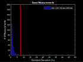
Here we see that most of these superficial (low S-D distance) pairs in [10, 16] fall below the 7.5% threshold.
NeuroDOT has a visualization for displaying a map of noisy channels filtering on the cap grid, PlotCapGoodMeas, which has two modes for the params.mode input: 'good' and 'bad'. Let's compare these for our HW1 and Noisy data sets, first in 'good' mode:
params.mode = 'good';
params.rlimits = [10, 16; 27, 33; 36, 42; 44, 50];
PlotCapGoodMeas(hw1.info, params)
PlotCapGoodMeas(noisy.info, params)
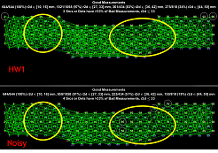
Here we see on the Good Measurements (GM) plot that HW1 has retained more channels in all radius groups above [10, 16]. We can see this reflected in the less dense grid for the Noisy data.
params.mode ='bad';
params.rlimits = [10, 16; 27, 33; 36, 42];
PlotCapGoodMeas(hw1.info, params)
PlotCapGoodMeas(noisy.info, params)
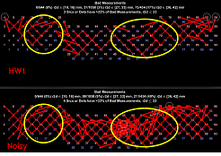
Conversely, the Bad Measurements plot is more dense for the Noisy data, especially along the middle-right and top-right edge of the cap.
The thicker lines represent closer measurements.
Let's clear unnecessary params fields and restore our radius limits:
params.mode = []; params.rlimits = [10, 16];
Linear Detrending
The next step is an easy one!
Linear detrending removes the linear component of the signal, or in other words, it flattens out long-term drift. This an optional step in the pipeline.
We can use MATLAB's detrend function on the transpose of data, and take the transpose of that result to maintain data's MEAS x TIME shape:
hw1.ddata = detrend(hw1.lmdata')';
This is best visualized with a mean time trace for the r2d = [10, 16], WL2 group that we care about, using PlotTimeTraceMean:
PlotTimeTraceMean(hw1.lmdata, hw1.info, params) PlotTimeTraceMean(hw1.ddata, hw1.info, params)
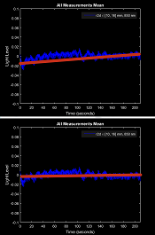
As we see from the red lines, the result clearly shows the removal of a trend.
The NeuroDOT 2 version, detrend_tts, ensures compatibility with NeuroDOT data structures. Let's run it on the Noisy data:
noisy.ddata = detrend_tts(noisy.lmdata);
High Pass Filter
The next step is a high pass filter (HPF), to remove long term drift. The choice of cutoff frequency is dictated by the stimulus paradigm. For this data set and paradigm, the repetition rate is every 30 seconds. The cutoff frequency here of 0.02 Hz translates to 1/50 s, which gives us a healthy margin. We will also need the framerate, which is stored in hw1.info.system.framerate and has a value of 10.0005 Hz.
The NeuroDOT function for this is highpass:
hw1.hpdata = highpass(hw1.ddata, 0.02, hw1.info.system.framerate); noisy.hpdata = highpass(noisy.ddata, 0.02, noisy.info.system.framerate);
This function employs a 5-pole, forward-backward Butterworth filter.
We can visualize this operation with PlotPowerSpectrumMean, before and after the filter, using params.fig_handle to plot both spectra in the same figure:
params.fig_handle = figure('Color', 'k'); params.ylimits = [0, 1e-5]; PlotPowerSpectrumMean(hw1.ddata, hw1.info, params) PlotPowerSpectrumMean(hw1.hpdata, hw1.info, params) legend({'detrended', 'highpassed'}, 'Color', 'k', 'TextColor', 'w')
NeuroDOT calculates the power spectrum by taking an FFT of the time traces, then multiplying the positive half of the frequency domain's absolute value by 2 for its full magnitude. The square of that magnitude is the power.
Let's also take a look at the mean power spectrum for the Noisy data:
params.fig_handle = figure('Color', 'k'); PlotPowerSpectrumMean(noisy.ddata, noisy.info, params) PlotPowerSpectrumMean(noisy.hpdata, noisy.info, params) legend({'detrended', 'highpassed'}, 'Color', 'k', 'TextColor', 'w')
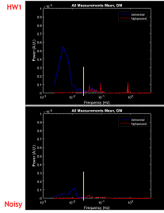
We see that the HPF attenuated signals below the 0.02 Hz cutoff (yellow lines). The poor coupling we observed in the Light Level Falloff, Cap Mean Light Levels and Good Measurements is reflected in the Noisy plots' weaker power between 10^-2 and 10^0 Hz.
We can also visualize the HPF by taking the mean of a subset of channels' time traces. The NeuroDOT function for this is PlotTimeTraceMean:
params.fig_handle = figure('Color', 'k'); params.ylimits = []; PlotTimeTraceMean(hw1.ddata, hw1.info, params) PlotTimeTraceMean(hw1.hpdata, hw1.info, params) legend({'detrended', 'highpassed'}, 'Color', 'k', 'TextColor', 'w')
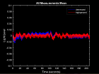
This plot can also be useful for visualizing each pipeline step's effect on the global signal. However, spatial information is diminished. Because r2d = [10, 16] mostly covers superficial tissue (scalp & skull), averaging these channels gives us a sense of the superficial hemoglobin contrast dynamics.
Low Pass Filter 1
The next step is a low pass filter (LPF1) with a cutoff frequency at 1 Hz. This is because we typically downsample to a 1 Hz sampling frequency after preprocessing, so any signals above 1 Hz are irrelevant.
The NeuroDOT function for this is lowpass, which has the exact same inputs as highpass in the previous section. The only difference is that lowpass filters frequencies above a cutoff, and highpass below.
Also, plot the power spectra of your LPF1 data, for both HW1 and Noisy, using the NeuroDOT 2 functions you've just learned.
In case you had trouble, here is the syntax for these:
hw1.lp1data = lowpass(hw1.hpdata, 1, hw1.info.system.framerate); noisy.lp1data = lowpass(noisy.hpdata, 1, noisy.info.system.framerate); params.fig_handle = figure('Color', 'k'); params.ylimits = [0 1e-5]; PlotPowerSpectrumMean(hw1.hpdata, hw1.info, params) PlotPowerSpectrumMean(hw1.lp1data, hw1.info, params) legend({'highpassed', 'lowpassed'}, 'Color', 'k', 'TextColor', 'w') params.fig_handle = figure('Color', 'k'); PlotPowerSpectrumMean(noisy.hpdata, noisy.info, params) PlotPowerSpectrumMean(noisy.lp1data, noisy.info, params) legend({'highpassed', 'lowpassed'}, 'Color', 'k', 'TextColor', 'w')
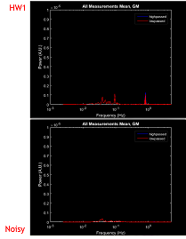
On both HW1 and Noisy, we see the action of LPF1 in the disappearance of the right-most peak, highlighted in red, which was just above the 1 Hz cutoff. Remember that you can use MATLAB's zoom tool to examine plots more closely!
Below is a zoomed-in view of HW1.
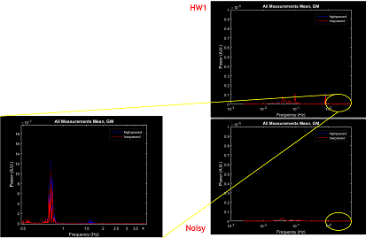
Let's also take a quick look at what would happen if we lowered the cutoff to 0.5 Hz:
temp = lowpass(hw1.hpdata, 0.5, hw1.info.system.framerate); params.fig_handle = figure('Color', 'k'); PlotPowerSpectrumMean(hw1.hpdata, hw1.info, params) PlotPowerSpectrumMean(hw1.lp1data, hw1.info, params) PlotPowerSpectrumMean(temp, hw1.info, params) legend({'highpassed', 'lowpass 1 Hz', 'lowpass 0.5 Hz'}, 'Color', 'k', 'TextColor', 'w')
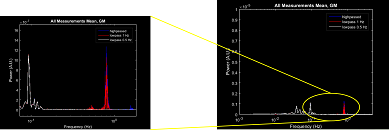
Before we move on, let's also look at HW1's mean time traces, as we did for the HPF:
params.fig_handle = figure('Color', 'k'); params.ylimits = []; PlotTimeTraceMean(hw1.hpdata, hw1.info, params) PlotTimeTraceMean(hw1.lp1data, hw1.info, params) legend({'highpassed', 'lowpassed'}, 'Color', 'k', 'TextColor', 'w')
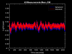
Superficial Signal Regression
Next is Superficial Signal Regression, or SSR, which removes superficial hemodynamics of the scalp & skull. This systemic signal (of the cardiovascular pulse in superficial blood vessels) is estimated by taking an average of the r2d = [10, 16] measurements.
The NeuroDOT function for taking this average is gethem:
hw1.hem = gethem(hw1.lp1data, hw1.info, 'NN', 1); noisy.hem = gethem(noisy.lp1data, noisy.info, 'NN', 1);
Then, we regress this hemodynamic signal from the rest of the data using NeuroDOT's regcorr.
hw1.SSRdata = regcorr(hw1.lp1data, hw1.info, hw1.hem); noisy.SSRdata = regcorr(noisy.lp1data, noisy.info, noisy.hem);
This regression follows the formula outlined in the literature [2]:

where 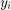 is the corrected signal, 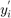 is the uncorrected signal, and ![$y_{r\in[10,16]}$](DOT_Processing_Tutorial_eq03133971348043604638.png) is the estimated superficial hemodynamic signal.
is the estimated superficial hemodynamic signal.
Go ahead and plot the mean power spectra for HW1, this time including the [27, 33] radius pairs. You can refer to the previous syntax in this tutorial for hints!
Here's the syntax in case you were having trouble:
params.rlimits = [10, 16; 27, 33]; params.fig_handle = []; PlotPowerSpectrumMean(hw1.lp1data, hw1.info, params) PlotPowerSpectrumMean(hw1.SSRdata, hw1.info, params)
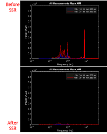
It is clear that the systemic signal (blue) has been regressed out (red).
Let's also look at the Gray Plots. Here's the syntax:
PlotGray(hw1.lp1data, hw1.info, params) PlotGray(hw1.SSRdata, hw1.info, params)
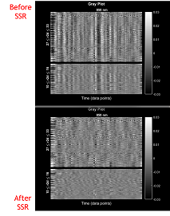
Notice that the r2d = [10, 16] channels have not been completely attenuated by SSR. Rather, it's the average of the [10, 16] channels' time traces that has been regressed out.
These channels still contain useful information that will be included in the final HD-DOT reconstruction.
Before we move on, let's see what the mean time traces look like again:
params.fig_handle = []; params.ylimits = []; PlotTimeTraceMean(hw1.lp1data, hw1.info, params) PlotTimeTraceMean(hw1.SSRdata, hw1.info, params)
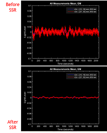
These results match what we've already seen: the [10, 16] pairs have had their average regressed from the data, resulting in ~0 signal.
Low Pass Filter 2
The penultimate step is a second lowpass filter, this time at a lower cutoff frequency of 0.5 Hz. This removes the cardiac pulse from the signal, and uses the same NeuroDOT function, lowpass, as before.
Using the functions you've learned, apply a 0.5 Hz filter to the HW1 and Noisy data sets, and visualize their power spectra before and after.
Here is the syntax:
hw1.lp2data = lowpass(hw1.SSRdata, 0.5, hw1.info.system.framerate); noisy.lp2data = lowpass(noisy.SSRdata, 0.5, noisy.info.system.framerate); params.rlimits = [27, 33]; params.fig_handle = figure('Color', 'k'); PlotPowerSpectrumMean(hw1.SSRdata, hw1.info, params) PlotPowerSpectrumMean(hw1.lp2data, hw1.info, params) legend({'SSR', 'LPF2'}, 'Color', 'k', 'TextColor', 'w')
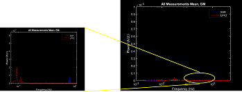
Here, we see that the pulse signal, just below 1 Hz (blue) has been filtered out (red).
One more time, let's look at the mean time traces:
params.rlimits = [27, 33]; params.fig_handle = figure('Color', 'k'); PlotTimeTraceMean(hw1.SSRdata, hw1.info, params) PlotTimeTraceMean(hw1.lp2data, hw1.info, params) legend({'SSR', 'LPF2'}, 'Color', 'k', 'TextColor', 'w')
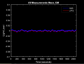
The signal is now very clearly defined after LPF2 (red).
1 Hz Resampling
The last preprocessing step is to resample the data from ~10 Hz to 1 Hz. We do this because the range of hemodynamic signals is far below 1 Hz, and thus functional neuroimaging is typically done on a 1 Hz time scale. This also has the benefit of reducing data storage requirements, eliminating noise, and providing a benchmark framerate to standardize all stimulus, data acquisitions, and analysis to.
The NeuroDOT function for this is resample_tts. The last input is the resampling frequency:
[hw1.rdata, hw1.info] = resample_tts(hw1.lp2data, hw1.info, 1); [noisy.rdata, noisy.info] = resample_tts(noisy.lp2data, noisy.info, 1);
Go ahead and plot the mean time trace for HW1 now.
Here's the syntax for the time traces:
params.ylimits = [-0.005 0.005]; params.fig_handle = []; PlotTimeTraceMean(hw1.lp2data, hw1.info, params) PlotTimeTraceMean(hw1.rdata, hw1.info, params)
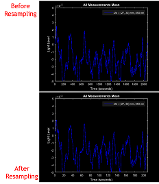
We see on the Time axis that the data has been resampled from ~2000 time points to ~200 - exactly the ~10x factor that we expected.
Block Averaging
We finally have preprocessed data ready for analysis. What’s next?
The first major analysis step is to average the stimulus blocks together. Averaging is a common way to increase signal-to-noise ratio (SNR) in neuroscience and other imaging experiments.
NeuroDOT's function for this is BlockAverage. The last input specifies which stimulus pulse to average for; in this case, we are averaging Pulse_2, which codes for the stimulus ON pulses:
hw1.badata = BlockAverage(hw1.rdata, hw1.info, 2); noisy.badata = BlockAverage(noisy.rdata, noisy.info, 2);
Let's visualize the HW1 and Noisy time traces. First, in order to see any activations, we need to normalize them due to the variance in mean light level between channels.
We'll normalize each channel to the mean of its first four seconds using NeuroDOT's normalize2range_tts:
hw1.ndata = normalize2range_tts(hw1.badata, 1:4); noisy.ndata = normalize2range_tts(noisy.badata, 1:4);
And now we'll plot the time traces, setting params to filter for Good Measurements (since only GM are reconstructed):
params.useGM = 1;
params.fig_handle = [];
params.ylimits = [-0.06, 0.06];
params.yscale = 'linear';
PlotTimeTraceAllMeas(hw1.ndata, hw1.info, params)
PlotTimeTraceAllMeas(noisy.ndata, noisy.info, params)
PlotGray(hw1.ndata, hw1.info, params)
PlotGray(noisy.ndata, noisy.info, params)
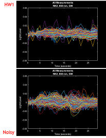
Even when filtering for Good Measurements, we still see some rather noisy channels (yellow arrows), and only a faint pattern of activation curves can be detected (it should be noted that this is also pre-spectroscopy).
These channels are global, not localized to the focal activation region, which is another reason why we do not see strong activation patterns.
We won't see any true activations until we've finished reconstructing this data.
Preprocessing Pipeline Complete!
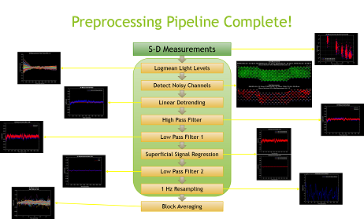
NeuroDOT 2 Overview Flowchart
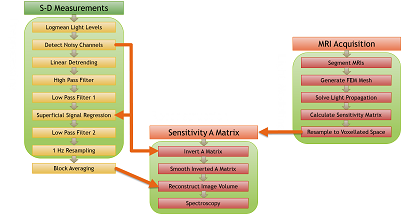
Reconstruction Pipeline Flowchart
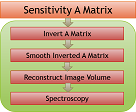
Reconstructing Image Volumes
After block averaging, we must reconstruct our measurement pairs into an image volume. This is done by applying a Tikhonov inversion to a linear Rytov approximation. What this ultimately means is that in the equation below, our measurements correspond to y, our sensitivity matrix is A, and the desired image volume is x.

After the reconstruction, we use the differing extinction coefficients of deoxy- and oxy-hemoglobin (HbO and HbR, respectively) at our two wavelengths (750 and 850 nm) to isolate each concentration from the other and calculate functional neural activity maps.
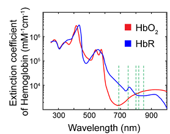
HD-DOT Sensitivity Profile
Here is a sensitivity profile for a single source-detector pair (a), and for the entire HD-DOT large cap system (b), which was used to gather the measurements we are using for our examples in this tutorial.
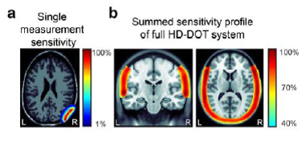
The summed sensitivity profile in (b) also essentially gives us our field of view (FOV) for the system. Note that this FOV overlaps with tissue superficial to the brain of the underlain atlas, such as scalp and skull.
Sensitivity A Matrix
The first step is to load our pre-calculated sensitivity matrix:
load('A_Adult_96x92.mat')
This file is quite large, so depending on your workstation, you may have to wait several minutes for it to load. It contains 3 variables: A, the sensitivity matrix, dim, a structure describing the reconstruction space, and infoA, a structure describing the A-matrix space.
We'll also need to load the spectroscopy matrix, E:
load('E.mat')
Invert A Matrix
The first reconstruction step is to invert the sensitivity A matrix so that it can be used in a linear approximation. NeuroDOT uses a Tikhonov inversion algorithm for this, in the function Tikhonov_invert_Amat.
We'll also have to do the processing separately for each wavelength. We will include pair radii below 42 mm and using only Good Measurements.
keep1 = (hw1.info.pairs.WL == 1) & (hw1.info.pairs.r2d <= 42) & hw1.info.MEAS.GI; keep2 = (hw1.info.pairs.WL == 2) & (hw1.info.pairs.r2d <= 42) & hw1.info.MEAS.GI; hw1.iA1 = Tikhonov_invert_Amat(A(keep1, :), 0.01, 0.1); hw1.iA2 = Tikhonov_invert_Amat(A(keep2, :), 0.01, 0.1);
The last two inputs are parameters for the Tikhonov regularization. This calculation may run for some time - ~10-20 minutes, depending on your CPU.
Smooth Inverted A Matrix
The next step is to smooth the sensitivity matrix with a Gaussian kernel. The NeuroDOT function for this is smooth_Amat:
hw1.siA1 = smooth_Amat(hw1.iA1, dim, 5, 1.2); hw1.siA2 = smooth_Amat(hw1.iA2, dim, 5, 1.2);
The last two inputs are the width and STD parameters for the Gaussian kernel.
Reconstruct Image Volume
It's finally time to reconstruct the image from our raw data! We'll use NeuroDOT's reconstruct_img to do this:
hw1.cortex_mu_a1 = reconstruct_img(hw1.badata(keep1, :), hw1.siA1); hw1.cortex_mu_a2 = reconstruct_img(hw1.badata(keep2, :), hw1.siA2);
With these two wavelengths reconstructed, let's take a look at the resultant images. First, we'll need to convert the images into a 3D space using dim and the NeuroDOT function Good_Vox2vol, and then we'll need to subtract the first four time points:
hw1.cortex_mu_a_vol1 = Good_Vox2vol(hw1.cortex_mu_a1, dim); hw1.cortex_mu_a_vol2 = Good_Vox2vol(hw1.cortex_mu_a2, dim); hw1.cortex_mu_a_vol1 = normalize2range_tts(hw1.cortex_mu_a_vol1, 1:4); hw1.cortex_mu_a_vol2 = normalize2range_tts(hw1.cortex_mu_a_vol2, 1:4);
Now, we can visualize these volumes using the NeuroDOT function PlotSlices, which creates an interactive, colormapped, 3-slice view of the reconstructed volume. Let's use t = 18 as our time point:
t18 = hw1.cortex_mu_a_vol1(:, :, :, 18); PlotSlices(t18)
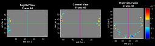
With the interactive navigation, try clicking around in PlotSlices to explore the volume. The general form of PlotSlices is:
PlotSlices(underlay, infoVol, params, overlay)
To look at an activity volume alone, use underlay. To view two volumes overlain together, the activity volume goes in overlay, and the background (such as an atlas) goes in underlay.
See the User Manual for more on how to use params in PlotSlices.
These volumes will be easier to contextualize if we use an atlas as a background. If you are unfamiliar with this concept, please refer to the Atlases appendix.
Let's load and visualize one of our several pre-prepared atlases:
load('Atlas_MNI152nl_T1_on_111.mat')
PlotSlices(atlas, [], [], t18)
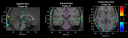
Since this is a Hearing Words paradigm, let's try to find a region of activation in the right superior temporal gyrus (STG for short). The bottom plot has been navigated to this region.
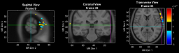
This is easier with an anatomical underlay to aid navigation now! From now on, we'll navigate directly to these areas using params:
params.slices = [9, 45, 33];
It was difficult to find activations in the STG, mainly because the WL1 signal was weak. Let's also take a look at the image we reconstructed from WL2, and navigate to the STG:
t18 = hw1.cortex_mu_a_vol2(:, :, :, 18); PlotSlices(atlas, [], params, t18)
Note: Per the sensitivity profile from earlier, some activations may appear slightly superficial to the tissues they occur in. Also remember, hw1.cortex_mu_a2 are absorption values, not actual activations.
Let's try averaging t = 13:21 for WL2:
t13_21 = mean(hw1.cortex_mu_a_vol2(:, :, :, 13:21), 4); PlotSlices(atlas, [], params, t13_21)
The averaging appears to have helped (1) filter out many of the spurious activations distal to the STG, and (2) increased the size and strength of the activations proximal to the STG.
Let's go back and average WL1 as well:
t13_21 = mean(hw1.cortex_mu_a_vol1(:, :, :, 13:21), 4); PlotSlices(atlas, [], params, t13_21)
The activations are clearer now.
Spectroscopy
The last step here is to perform spectroscopy. This allows us to get the HbO and HbR concentrations from our light levels in cortex_mu_a and cortex_mu_a2. The NeuroDOT function is spectroscopy_img:
cortex_mu_a = cat(3, hw1.cortex_mu_a1, hw1.cortex_mu_a2); hw1.cortex_Hb = spectroscopy_img(cortex_mu_a, E);
Before we image anything, let's separate out the HbO results, convert to dim space, and subtract the first four time points again:
hw1.cortex_HbO = hw1.cortex_Hb(:, :, 1); hw1.cortex_HbOvol = Good_Vox2vol(hw1.cortex_HbO, dim); hw1.cortex_HbOvol = normalize2range_tts(hw1.cortex_HbOvol, 1:4);
Let's visualize HbO with PlotSlices:
t18 = hw1.cortex_HbOvol(:, :, :, 18); PlotSlices(atlas, [], params, t18)
We can probably improve our SNR by doing some averaging again. Let's use the same t = 13:20 interval as before:
t13_21 = hw1.cortex_HbOvol(:, :, :, 13:21); PlotSlices(atlas, [], params, mean(t13_21, 4))
We can also map these activation volumes onto a surface mesh of the brain. It's easy to miss some activations while navigating three-slice views. Surface mapping avoids this by showing activations on the surface of the brain.
First, we need to load a mesh:
load('LR_Meshes_MNI_164k.mat')
This file contains two meshes of the mesh data type, MNIl and MNIr, corresponding to the left and right hemispheres of a segmented version of the non-linear MNI 152 atlas we've been using with PlotSlices. This mesh has nearly 164,000 nodes, corresponding to the "|164k|" in the file name.
The NeuroDOT function we'll be using here is PlotInterpSurfMesh. This function interpolates our HbO volume onto the mesh we just loaded, and displays it with similar formatting, spatial orientation, and colormapping features to PlotSlices. The general syntax of this function is:
t18 = hw1.cortex_HbOvol(:, :, :, 18); PlotInterpSurfMesh(t18, MNIl, MNIr, dim, params)
And finally, we'll do the time averages:
t13_21 = hw1.cortex_HbOvol(:, :, :, 13:21); PlotInterpSurfMesh(mean(t13_21, 4), MNIl, MNIr, dim, params)

Reconstruction Pipeline Complete!
Saving Your Results
With the pipeline complete, it's always important to save our data.
As a native MATLAB toolbox, NeuroDOT does not require any specific file formats. We recommend that you use MATLAB's save function to save the entire workspace as a .MAT file. You can also right-click on the MATLAB workspace panel to access a save dialog.
Alternatively, there are a number of file formats supported by NeuroDOT. All of this functionality is explained in greater detail in the File IO Appendix.
Conclusion
Congratulations! You have finished the NeuroDOT 2 Base Edition Preprocessing Pipeline Tutorial.
For further questions or more information, please consult the NeuroDOT 2 Base User Manual and the various Appendices.
NeuroDOT 2 Support Team:
- Adam Eggebrecht (aeggebre@wustl.edu)
- David Muccigrosso (muccigrosso.david@wustl.edu)
Citations
- Eggebrecht et al., "Mapping distributed brain function with diffuse optical tomography." Nature Photonics, 2014. DOI: 10.1038/NPHOTON.2014.107
- Zeff et al., "Retinotopic mapping of adult human visual cortex with high-density diffuse optical tomography." PNAS, 2007. DOI: 10.1073/pnas.0611266104
Appendix: Preprocessing
Some notes on the block averaging and LPF1 stages: * Because LPF1 filters out the Nyquist frequency of the downsampling stage (see Neuro Photonics 2014 paper), which is not featured here, it really could be featured at any point in this pipeline after the logmean. The point of LPF1 is to remove all signal components at frequencies higher than the one it will be eventually downsampled to, so that they do not affect any of the other stages of the pipeline, and thus it is placed after the logmean and HPF. * Similarly, block averaging can be done at any point after LPF1. Since the raw data after the logmean is technically in a state that can be feasibly reconstructed, pretty much every step afterwards is just clearing up interfering signals. If a different sort of optical data does not have such signals present, there is little need for further preprocessing.